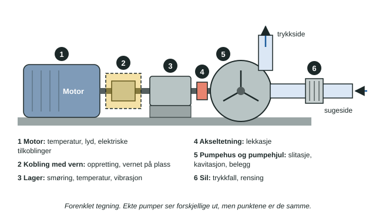

Vedlikehold av vanlig utstyr
Pumper, ventiler, varmevekslere, filtre og instrumenter finnes i nesten alle prosessanlegg. Hvert utstyr har sine svake punkter og sine faste vedlikeholdsjobber. Her lærer du hva du skal se etter, og hva som vanligvis gjøres.
Før, under og etter jobben
Uansett hvilket utstyr det gjelder, følger en vedlikeholdsjobb det samme mønsteret. Det bygger på det du lærte på siden Systematisk vedlikehold.
- Før: Det finnes en arbeidsordre og en prosedyre. Arbeidstillatelsen er klar. Utstyret er stoppet, tømt, trykkløst og sikret med lås og merk. Riktige reservedeler og riktig verktøy ligger klart.
- Under: Følg prosedyren steg for steg. Bruk bare godkjente reservedeler av riktig type og materiale. En pakning av feil materiale kan løses opp av kjemikaliet og lekke.
- Etter: Rydd, ta bort sikringen etter prosedyren, test utstyret og sjekk at det ikke lekker. Først da settes det i drift igjen. Skriv ned hva som ble gjort og funnet.
Pumper
Pumper er blant det utstyret i anlegget som oftest trenger vedlikehold, fordi de har mange deler som beveger seg. Hvordan pumper virker, lærte du på siden Pumpetyper. Figuren viser hvor du skal se etter feil på en vanlig sentrifugalpumpe.

- Lager: Lagrene bærer akselen. De trenger riktig mengde av riktig smøremiddel. For lite smøring sliter lageret, men for mye fett kan også gjøre det varmt. Et slitt lager gir vibrasjon, lyd og varme.
- Akseltetning: Den er den delen som oftest lekker. En lekkasje her skal meldes, særlig når pumpa går med kjemikalier.
- Kobling og oppretting: Akselen til motoren og akselen til pumpa skal ligge helt på linje. Å justere dette kalles oppretting. Er de ikke opprettet, slites lager og tetning mye fortere. Koblingen skal alltid ha vern.
- Pumpehjulet kan slites av partikler, få hull av kavitasjon eller få belegg. Skaden sees bare når pumpa åpnes, men den merkes ved at pumpa gir mindre enn før.
- Silen på sugesiden går gradvis tett. Da øker trykkfallet over den, altså forskjellen mellom trykket før og etter silen. Når trykkfallet blir for stort, skal silen renses.
Ventiler
Ventiler står stille det meste av tiden, men har også svake punkter. Se Ventiltyper for hvordan de ulike ventilene er bygd.
- Lekkasje langs spindelen: Der spindelen går ut av ventilhuset, sitter en pakning som kan lekke. Ofte kan den strammes litt, men bare av den som har lov til det og etter prosedyren.
- Lekkasje gjennom ventilen: Er setet slitt, slipper ventilen gjennom væske eller gass selv når den er stengt. Derfor er én stengt ventil ikke nok sikring før vedlikehold.
- Fast ventil: En ventil som aldri beveges, kan sette seg fast av belegg og rust. Derfor beveges (mosjoneres) viktige ventiler som sjelden brukes, med faste mellomrom.
- Reguleringsventiler har en aktuator som også må vedlikeholdes, for eksempel slanger for trykkluft som lekker.
- Sikkerhetsventiler testes og overhales etter fast plan, ofte på et verksted. De skal aldri blokkeres. Bare de som har ansvaret og godkjenning, kan justere dem, og bare etter prosedyren.
Varmevekslere
Det vanligste problemet i en varmeveksler er belegg på varmeflatene, for eksempel kalk fra kjølevannet. Belegget isolerer, slik at varmen overføres dårligere, og det gjør åpningene trangere.
- Tegn på belegg: Produktet blir ikke kjølt eller varmet like godt som før, og trykkfallet øker. Følg med på temperaturene inn og ut, og på trykkfallet.
- Rengjøring: Belegget fjernes med kjemikalier, for eksempel syre som løser kalk, eller mekanisk ved spyling med høyt trykk.
- Lekkasje inne i varmeveksleren: Hull i et rør eller en plate gjør at strømmene blandes. Det oppdages ofte med prøver, for eksempel produkt i kjølevannet.
- Platevarmevekslere som kan åpnes, har gummipakninger mellom platene, som blir harde med tiden og må byttes.
Filtre og siler
Filtre og siler skal holde tilbake partikler, så de går tett før eller senere. Det følges best med på ved å måle trykkfallet over filteret, slik som for silen foran pumpa. Når trykkfallet når en fast grense, skal filteret renses eller byttes. Mange filtre står i par, slik at det ene kan renses mens det andre er i drift. Mer om filtre står på siden Filtrering.
Instrumenter
Et instrument som viser feil, kan være like farlig som en pumpe som stopper, fordi operatøren tar feil avgjørelser. Vanlig vedlikehold av givere og transmittere er
- å rengjøre følere som får belegg, for eksempel pH-elektroder og nivåmålere
- å sjekke at rørene fra prosessen til giveren ikke er tette eller frosne
- å sammenligne med et annet instrument eller en lokal måler, og melde fra hvis de viser forskjellig
- å kalibrere etter fast plan. Det lærer du mer om i emnet Kalibrering.
Rør, tanker og flenser
- Korrosjon: Veggtykkelsen måles jevnlig, særlig der det er kjent at korrosjon er et problem. Mer om dette lærer du i emnet Korrosjon.
- Flenser: Der to rør er boltet sammen, sitter en pakning. Etter vedlikehold skal boltene strammes i kryss og i flere runder, til riktig tiltrekkingsmoment, altså hvor hardt bolten skal strammes, oppgitt i newtonmeter (N·m). Da klemmes pakningen jevnt. Strammes én side hardt først, kan flensen lekke.
- Isolasjon: Skadet isolasjon gir varmetap og kan slippe inn vann, slik at røret ruster under isolasjonen der ingen ser det.
Regneeksempel: en liten lekkasje
Oppgave: En akseltetning drypper én dråpe i sekundet. Én dråpe er omtrent 0,05 mL. Hvor mye lekker det på et døgn og på et år?
Løsning:
- Sekunder i et døgn: 24 h · 60 min/h · 60 s/min = 86 400 s.
- Lekkasje per døgn: 86 400 dråper · 0,05 mL = 4 320 mL ≈ 4,3 L.
- Lekkasje per år: 4,32 L/døgn · 365 døgn ≈ 1 580 L, altså rundt 1 600 L.
Svar: Omtrent 4,3 liter i døgnet, eller rundt 1 600 liter i året. Er det et kjemikalie, er det både et HMS-problem, et miljøproblem og tapt produkt. En liten lekkasje skal derfor alltid meldes.
- Utstyret skal være sikret med lås og merk, tømt og trykkløst før det åpnes. Husk at det kan være rester av kjemikalier igjen inne i pumper, ventiler og varmevekslere.
- Verneutstyr: Bruk det verneutstyret som sikkerhetsdatabladet og arbeidstillatelsen krever, særlig ved rengjøring med syre og ved åpning av utstyr som har inneholdt kjemikalier.
- Roterende utstyr: Vern over koblinger skal alltid settes på igjen før pumpa startes.
- Stram aldri en flens eller en pakning som står under trykk uten at prosedyren sier at det er lov. Bolten kan ryke, eller pakningen kan blåse ut.
- Spyling med høyt trykk kan gi alvorlige skader. Den gjøres bare av opplærte folk med riktig verneutstyr.
Lær deg de svake punktene på utstyret i ditt område. På runden kan du gå gjennom dem én etter én: lager, tetning, kobling og sil på hver pumpe, spindel på ventilene, trykkfall over filtrene. Da blir runden en del av vedlikeholdet.
På neste side lærer du mer om hvordan vedlikehold gjøres trygt: arbeidstillatelse, isolering og hva som må være på plass før noen åpner utstyret.
Test deg selv
1. Hvilken del av en sentrifugalpumpe lekker oftest?
- Pumpehuset
- Akseltetningen
- Motoren
Akseltetningen sitter der akselen går gjennom pumpehuset, og den slites hele tiden pumpa går. Derfor er den den delen som oftest lekker.
2. Hva betyr det at en pumpe og en motor er opprettet?
- At akslene ligger helt på linje
- At pumpa er satt opp riktig vei
- At motoren har fått strøm igjen etter vedlikehold
Oppretting er å justere motor og pumpe slik at akslene ligger på linje. Ellers slites lager og tetning mye fortere.
3. En varmeveksler kjøler dårligere enn før, og trykkfallet over den har økt. Hva er mest sannsynlig?
- Pakningene har blitt for myke
- Det har lagt seg belegg på varmeflatene
- Kjølevannet er for kaldt
Belegg isolerer, så varmen overføres dårligere, og det gjør åpningene trangere, så trykkfallet øker. Varmeveksleren må rengjøres.
4. Hvorfor mosjoneres viktige ventiler som sjelden brukes?
- For å slite dem jevnt
- For å teste om aktuatoren har strøm
- For at de ikke skal sette seg fast av belegg og rust
En ventil som aldri beveges, kan sette seg fast. Da virker den ikke den dagen den trengs, for eksempel for å stenge av en lekkasje.
5. Hvordan skal boltene i en flens strammes etter vedlikehold?
- Så hardt som mulig, én og én rundt flensen
- I kryss, med riktig tiltrekkingsmoment
- Bare de øverste, så pakningen kan bevege seg
Når boltene strammes i kryss med riktig kraft, klemmes pakningen jevnt, og flensen blir tett. For hard eller skjev stramming kan ødelegge pakningen.
Ordliste
| Begrep | Forklaring | Engelsk |
|---|---|---|
| akseltetning | Tetningen der akselen går gjennom pumpehuset. Den hindrer at væsken lekker ut. | shaft seal |
| lager | Maskindel som bærer en roterende aksel og lar den gå rundt med lite friksjon. | bearing |
| smøring | Å tilføre olje eller fett, slik at deler som beveger seg mot hverandre, slites mindre og ikke blir for varme. | lubrication |
| oppretting | Å justere motor og pumpe slik at akslene ligger helt på linje. | shaft alignment |
| pakning | En myk ring eller plate som klemmes mellom to deler, for eksempel i en flens, slik at skjøten blir tett. | gasket |
| mosjonering | Å bevege en ventil som sjelden brukes, med faste mellomrom, så den ikke setter seg fast. | valve exercising |
| tiltrekkingsmoment | Hvor hardt en bolt skal strammes, oppgitt i newtonmeter (N·m). Det stilles inn på en momentnøkkel. | tightening torque |
| trykkfall | Forskjellen mellom trykket der en strøm går inn i utstyret og der den går ut. | pressure drop |
| belegg | Et lag av kalk, slam, rust eller produktrester som legger seg på varmeflatene og gjør at mindre varme går gjennom. | fouling |
Les mer
- Pumpetyper, Ventiltyper, Typer varmevekslere og Filtrering: hvordan utstyret er bygd og virker.
- Givere og transmittere: instrumentene i anlegget.
- Typer vedlikehold: tidsbasert og tilstandsbasert vedlikehold.
Om kildene: Teksten, eksemplene og figurene på denne siden er laget for dette nettstedet. Siden bygger på undervisningsopplegg i kjemiprosess- og laboratoriefag ved Sauda vgs, som er utarbeidet med utgangspunkt i blant annet Kjemien stemmer, Laboranten og åpne nettkilder.